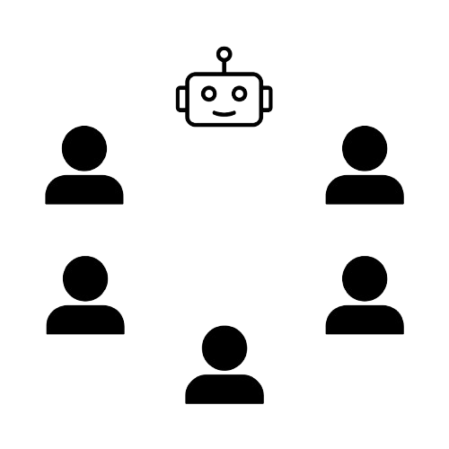

Odd One Out is a game where a group tries to identify the outlier among them. Each round, the group votes to remove a member. The group then votes to continue the game. When the game ends, if the outlier has been caught, each remaining member wins, otherwise, everyone loses.
A computer would deserve to be called intelligent if it could deceive a human into believing that it was human.
- Alan Turing